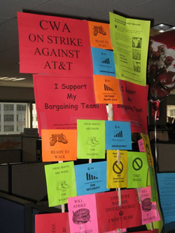

Submitted on Fri, 05/19/2017 - 4:18pm

If you are reading this then over 40,000 CWA union members have walked off their jobs as part of a three day strike against AT&T. The strike at the telecommunications giant is just one of the latest in a string of strikes by workers in the industry that have all pushed back against attacks on wages, health care, job outsourcing, and corporate globalization.
Despite tough talk from both major capitalist parties and Trump in particular, since the economic meltdown of 2008, the only thing that has changed is that billions of dollars have moved out of the hands of poor and working-class people and into the hands of the billionaires – who are now running the government.
Submitted on Tue, 08/09/2011 - 7:12pm
Members of the Boston IWW joined striking Verizon workers for their second day of pickets at the regional headquarters in downtown Boston. Striking members of IBEW local 2222 were pleased with the show of solidarity as we marched together in the sometimes driving rain. The strikers were in good spirits as they walked the all-day picket line and confronted scabs at the local Verizon Headquarters.
The workers went on strike after Verizon, taking advantage of the current economy and widespread attacks on the working class, demanded concessions from the workers while the company and its top executives have taken in billions of dollars in profits. In fact, the company has made more than $15 billion in profits in the past four years while at the same time paying no federal income tax from 2009-2010 and instead receiving over $1 billion in tax refunds. The company was demanding that workers contribute more to healthcare costs, the elimination of pensions, a reduction in sick pay and elimination of Veteran’s and Martin Luther King day as paid holidays. Further, the company was pushing to have more work outsourced to non-union workers. As a result of these demands the negotiations broke down and 45,000 workers from CWA and IBEW walked out, including 6,000 in Massachusetts.
At times tensions rose during the picket as scabs exited the building. At one point food was delivered to the workers inside by the notoriously exploitative Upper Crust Pizza, who previously had their windows smashed on May Day because of their abuse of workers. Picketers attempted to block the delivery of the food while police protected those making the delivery. Tempers flared and at one point 100s of sodas were knocked from a palate and later thrown at the delivery van. Workers also attempted to encircle and block the van until finally cops and union bosses convinced them to let the van flee the scene. The picketers showed a degree of militancy and class outrage not commonly seen at other pickets and labor rallies. One Verizon worker who was not familiar with the IWW was given a flyer explaining the position of the IWW and was very receptive. The Verizon workers plan on being out on the picket lines every day for at least two weeks. The Boston branch plans on supporting them as long as the strike continues while at the same time spreading the idea of revolutionary unionism to the rank and file workers.
Submitted on Wed, 05/05/2010 - 2:53am
 On April 5, 2010, iww.org won Shmoop's Best of the Web History of Labor Unions!
On April 5, 2010, iww.org won Shmoop's Best of the Web History of Labor Unions!
"Shmoop is an education website for students and teachers (middle school through college ages). [Their] mission is to make learning fun and relevant for today's students. Each of [their] learing guides includes a "Best of the Web" section, where [they] point teachers and students to quality, reliable websites for further exploration, and [they] picked [our] site!
"[Their] writers (who are mostly Ph.D. students at Stanford, Harvard, Berkeley, etc.) pick the sites that go into their Best of the Web section. Teachers and students rely on [their] expert writers to point out only the highest quality websites. . ."
Submitted on Tue, 04/14/2009 - 12:45am

By x359209 - IU 560 Job Shop (dual card CWA)
IWW/CWA dual-carders in the heart of the struggle
At midnight April 5, 2009 contracts for most of the component groups represented by the Communications Workers of America (CWA) at the
telecom giant AT&T have expired. After weeks of mobilizing, around 90,000
workers are poised to strike one of the largest and most profitable
multinational corporations. A job action by CWA would be the largest and among the
most significant labor action in the United States since the UPS strike in 1997. It would also be the first major strike under the Obama regime.
The brewing confrontation could set the tone for class struggle in the
U.S. for the near future.
Attack on Healthcare
AT&T has been pressing hard for major concessions from its call
center, billing & ordering, and technical workers, especially in the area
of health care. The company is demanding harsh cost shifting in the form
of premiums and huge deductables for current employees and even steeper
cuts for “second tier” workers hired going forward. AT&T is also
demanding concessions in areas of seniority, over-time, and discipline. Raises
would be replaced for the first two years by one-time lump payments.
Billions in Profit
AT&T corporate PR hacks have been spinning that healthcare must be
reduced to avoid a repeat of what has happened to the U.S. auto industry. But
AT&T is not General Motors. It is in a growing, innovative industry - one
where AT&T bosses made $12.9 Billion in profits in 2008 alone. Besides, the
U.S. healthcare crisis and its skyrocketing costs are not the fault of
workers and their families and we should not be made to shoulder its burden. Workers at AT&T are furious that such a rich company would attack
their families’ access to healthcare.